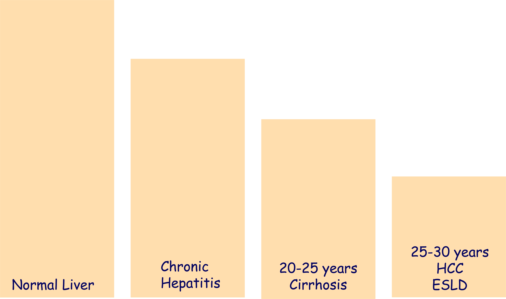
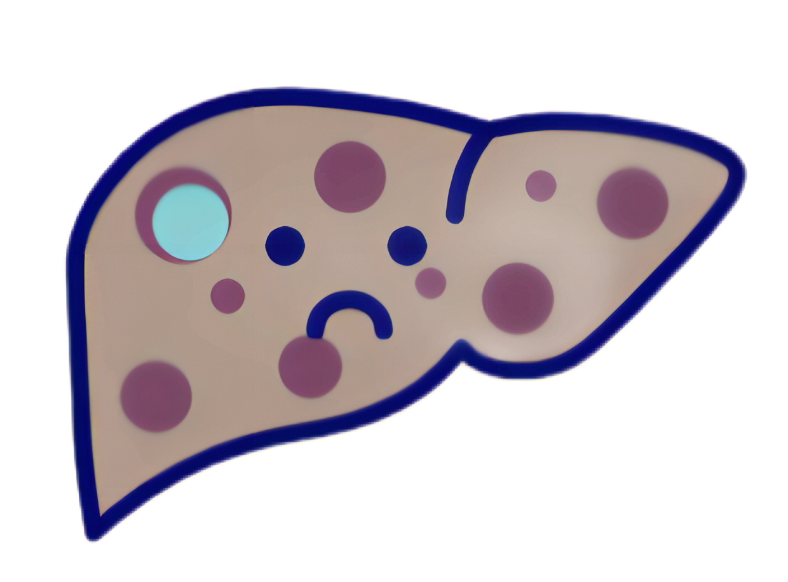
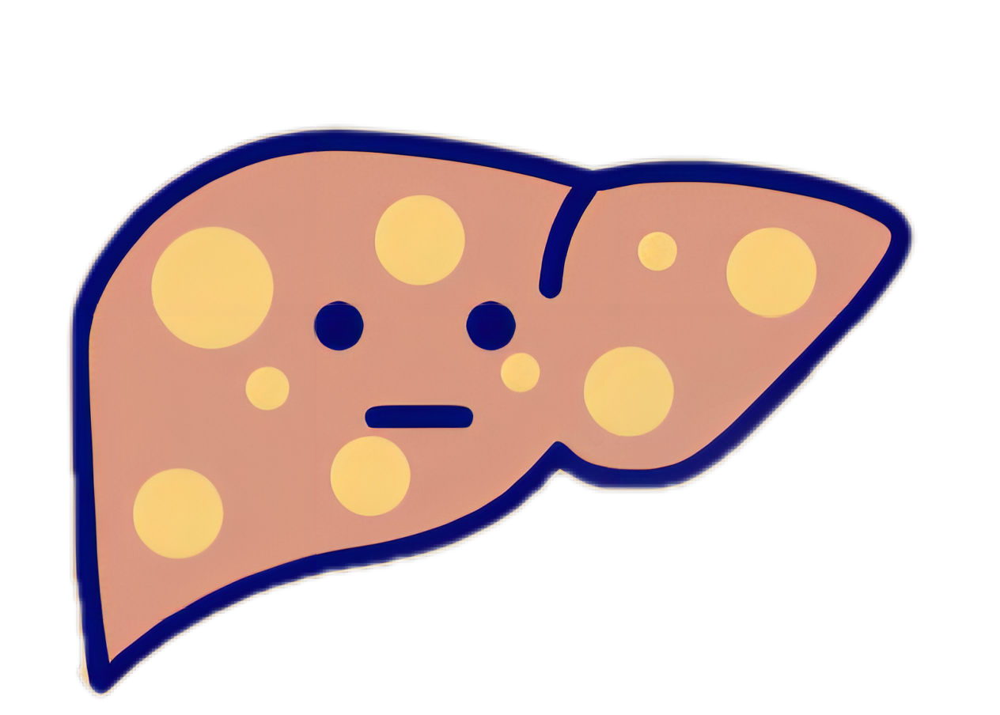
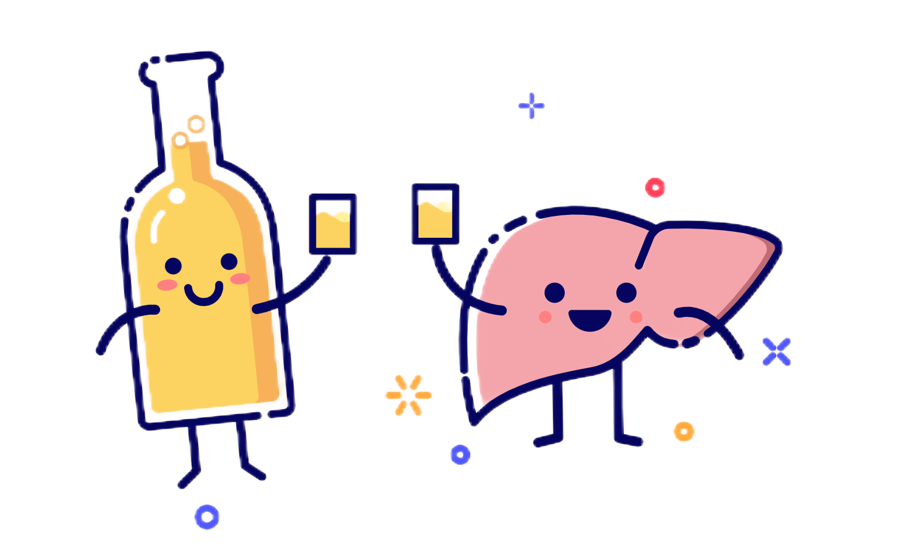

Chronic hepatitis caused by hepatitis infections
B, C, D and other reasons can last for
several
decades and
culminate in
over
1million deaths per year.
almost1,000,000deaths
every year
9,400,000CHC people
are receiving treatment
almost10%of BHC people are diagnosed
42%of children have access to HBV

Persistent inflammation in patients with chronic hepatitis can gradually damage
the liver
and eventually lead to
cirrhosis, hepatic failure, and even develop into liver cancer.
However...
Liver disease has not received enough attention.


